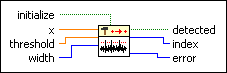

Threshold Detector PtByPt VI
Owning Palette: Signal Operation PtByPt VIs
Requires: Full Development System
Analyzes the set of input data points specified by width for valid peaks and detects the set of points that exceed the threshold in a valid peak.
This VI is similar to the Threshold Detector VI.
 | Note By default, reentrant execution is enabled in all Point By Point VIs. |

 Add to the block diagram Add to the block diagram |
 Find on the palette Find on the palette |